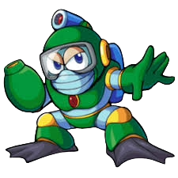

Seriously, who thought it was a good idea to make so many of the robot masters weak to Broken... err... Metal Blade?! Bubble Man is another of these victims... and his stage is actually kind of annoying. Getting through Bubble Man's stage without taking a hit is actually very difficult due to the shrimp enemies! They move in very unpredictable patterns and they tend to appear in large numbers. If you get past both the enemies that generate the shrimp without taking a hit, you are probably set.
Rapid Development: Due to poor sales of the original, the team worked on Mega Man 2 between other projects in a very short timeframe. Critical Success: It is frequently ranked among the best video games of all time. Awards: At the 1989 Nintendo Power Awards, it won "Best Graphics and Sound" and "Best Play Control".
In Mega Man 2, Quick Man is a fast, combat-oriented Robot Master created by Dr. Wily, designed to counter Mega Man using speed and agility. He servesas a challenging boss, utilizing high-speed dashes, jumping attacks, and the Quick Boomerang weapon. He is heavily inspired by Elec Man's design and is known for his immense speed.